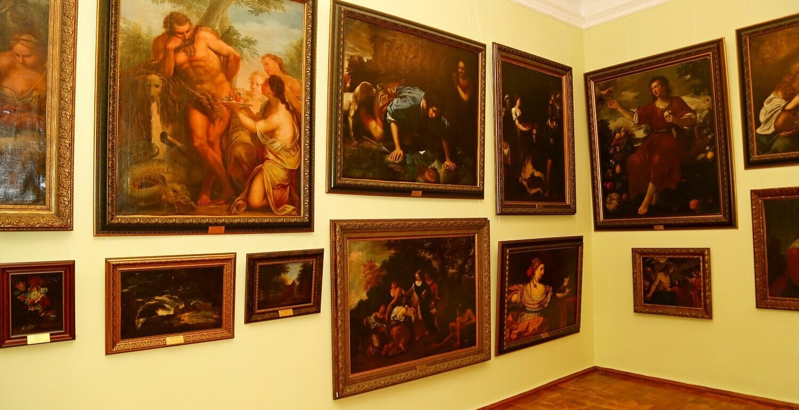

The gallery was founded in 2001 and is one of the leading art spaces in Ukraine.
We collect works of classical, modern, and folk art.
Main Areas:
Ukrainian Painting
World Artists
Contemporary Art
Painting
The art of applying paint to a surface to create images
Welcome to the Ukrainian Art Gallery Nestled in the heart of cultural heritage,
the Ukrainian Art Gallery showcases a rich tapestry of traditional and contemporary masterpieces.

From vibrant folk motifs to bold modern expressionism, each artwork tells the story of a nation shaped by resilience, beauty,
and creativity.
Step inside and discover the soul of Ukraine through the eyes of its artists.